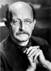

Max Planck (1858–1947) elektronlar, protonlar, nötronlar gibi küçük atom-altı parçacıklar üzerine çalışan fizik dalı kuantum teorisinin kurucusudur. Buluşları onu Almanya’nın saygın fizikçileri arasına soktu. Aralarında Albert Einstein (1879–1955) ve Erwin Schrödinger (1887–1961) gibi isimlerin de bulunduğu parlak bir fizikçiler kuşağının akıl hocası konumundaydı. 1918 yılında altmış yaşındayken Nobel ödülü kazandı.

Başarılarına rağmen, Naziler Almanya’da iktidarı ele geçirdiğinde “Yahudi bilimi” öğrettiği gerekçesiyle hor görüldü. 1938 yılında profesörlükten istifa etti. Oğullarından birinin Naziler tarafından idamına tanık oldu. Savaştan kısa bir süre sonra öldü.
Planck, Holstein’in Almanca konuşulan bir bölgesinde doğdu. O doğduğu sırada Holstein, Danimarka’nın kontrolündeydi. 1864 yılında Almanya bölgeyi ele geçirdi. Birkaç yıl sonra Planck ve ailesi Münih’e taşındı. 1874 yılında Münih Üniversitesi’nde fizik öğrenimi görmeye başladı. Bir profesörün keşfedilecek hiçbir şeyin kalmadığı yönündeki uyarısını duymazlıktan geldi.
İlk defa 1900 yılında dillendirilen kuantum fiziği, bilimde büyük bir değişim yaşanmasına neden oldu. Planck’ın kendisi bile onun önemini uzun yıllar boyunca anlayamayacaktı. Planck ve ilham verdiği fizikçiler, atomun içindeki küçük parçacıkların Isaac Newton (1643–1727) tarafından ortaya atılan kurallara göre hareket etmediğini ortaya koydu. Örneğin; kütle çekim kanunu, atomun çekirdeğin üzerine çökmesine neden olmuyordu.
Planck I. Dünya Savaşı sırasında Einstein ile ilişkisini kesmeye başladı. Zira Planck savaşta Almanya’yı destekliyordu. Buna rağmen Yahudi fizikçi Einstein ile bir zamanlar iyi olan ilişkileri onu Üçüncü Reich döneminde şüpheli konumuna soktu. Nazi gazeteleri ona kendi Yahudi kökenini gizlediği iddiasıyla saldırıya geçtiler. Küçük oğlu Erwin Planck (1893–1945) 1944 yılında Hitler’e karşı yapılan bir suikast girişimine dahil olmuştu. Savaşın bitiminden kısa bir süre önce Gestapo tarafından asıldı. Oğlunun ölümüne çok üzülen Max Planck 1947 yılında seksen dokuz yaşındayken öldü.
Ek Bilgiler
1- Planck termodinamikle ilgili tezini dört ay içinde yazarak 20 yaşında doktora aldı.
2- Almanya’nın en önemli fizik araştırma merkezi olan “Kaiser Wilhelm Enstitüsü” 1948 yılında “Max Planck Enstitüsü” adını aldı.
3- Planck’ın bütün çocukları trajik nedenlerden dolayı öldüler. Büyük oğlu Karl, I. Dünya Savaşı sırasında Alman ordusuna katıldı. 1916 yılında savaşırken öldü. İki kızı da doğum yaparken vefat etti.